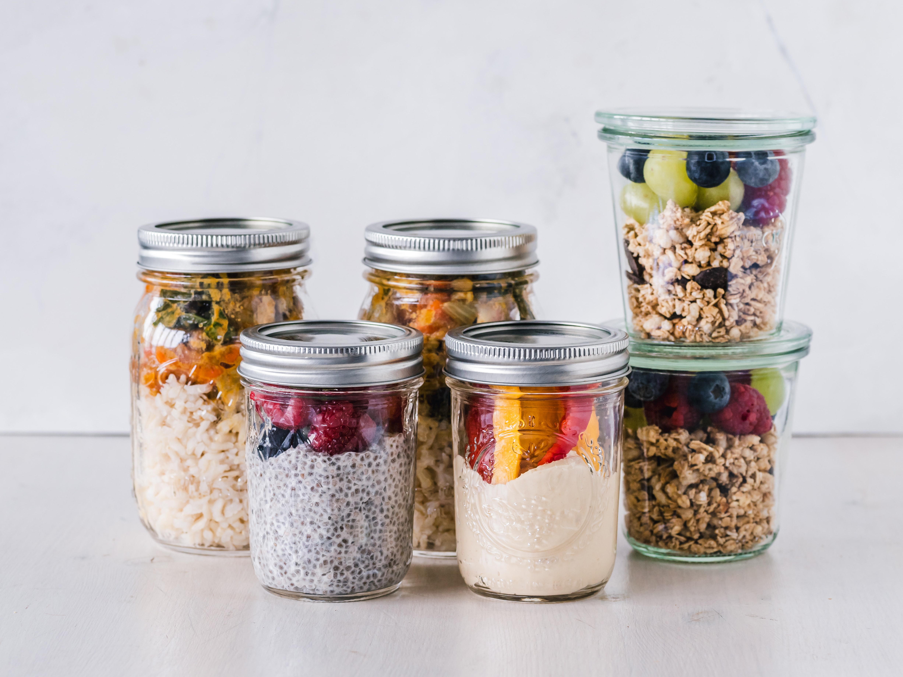
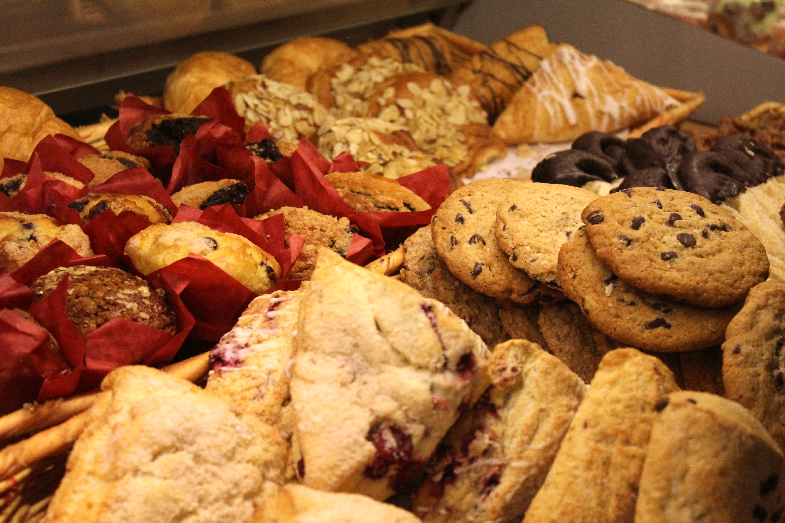

Poseemos una amplia variedad de productos: viandas saludables, yogures caseros, verduras y frutas orgánicas, galletitas y mermeladas caseras, y muchos muchos más... Vení a deleitarte con nuestros productos realizados con la máxima calidad que nos avala.



